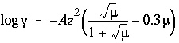
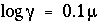

Explanation
Keyword for the data block. No other data are input on the keyword line.
Association reaction for aqueous species. The defined species must be the first species to the right of the equal sign. The association reaction must precede any identifiers related to the aqueous species. The association reaction is an identity reaction for each primary master species.
log_k--Identifier for log K at 25 o C. Optionally, -log_k, logk, -l[ og_k], or -l[ ogk].
log K --Log K at 25 o C for the reaction. Log K must be 0.0 for primary master species. Default is 0.0.
Line 3: delta_h enthalpy, [ units ]
delta_h--Identifier for enthalpy of reaction at 25 o C. Optionally, -delta_h, deltah, -d[ elta_h], or -d[ eltah].
enthalpy --Enthalpy of reaction at 25 o C for the reaction. Default is 0.0.
units --Default units are kilojoules per mole. Units may be calories, kilocalories, joules, or kilojoules per mole. Only the energy unit is needed (per mole is assumed) and abbreviations of these units are acceptable. Explicit definition of units for all enthalpy values is recommended. The enthalpy of reaction is used in the van't Hoff equation to determine the temperature dependence of the equilibrium constant. Internally, all enthalpy calculations are performed with the units of kilojoules per mole.
Line 4: -analytical_expression A 1 , A 2 , A 3 , A 4 , A 5
-analytical_expression--Identifier for coefficients for an analytical expression for the temperature dependence of log K . Optionally, analytical_expression, a_e, ae, -a[ nalytical_expression], -a[ _e], -a[ e].
A
1
, A
2
, A
3
, A
4
, A
5
--Five values defining log
K
as a function of temperature in the expression  , where
T
is in Kelvin.
, where
T
is in Kelvin.
Line 5: -gamma Debye-Hückel a, Debye-Hückel b
-gamma--Indicates activity-coefficient parameters are to be entered. If
-gamma is not input for a species, for charged species the Davies equation is used to calculate the activity coefficient: 
; for uncharged species the following equation is used 
. If
-gamma is entered, then the equation from WATEQ (Truesdell and Jones, 1974) is used,  . In these equations,
. In these equations,  is the activity coefficient,
is the activity coefficient,  is ionic strength, and
A
and
B
are constants at a given temperature. Optionally,
-g[
amma].
is ionic strength, and
A
and
B
are constants at a given temperature. Optionally,
-g[
amma].
Debye-Hückel a --Parameter a o in the WATEQ activity-coefficient equation.
Debye-Hückel b --Parameter b in the WATEQ activity-coefficient equation.
-no_check--Indicates the reaction equation should not be checked for charge and elemental balance. The only exceptions might be polysulfide species which assume equilibrium with a solid phase; this assumption has the effect of removing solid sulfur from the mass-action equation. By default, all equations are checked. However, the identifier -mole_balance is needed to ensure that the proper number of atoms of each element are included in mole-balance equations (see -mole_balance). Optionally, no_check, or -n[ o_check].
-mole_balance--Indicates the stoichiometry of the species will be defined explicitly. Optionally, mole_balance, mass_balance, mb, -m[ ole_balance], -mass_balance, -m[ b].
formula --Chemical formula defining the stoichiometry of the species. Normally, both the stoichiometry and mass-action expression for the species are determined from the chemical equation that defines the species. Rarely, it may be necessary to define the stoichiometry of the species separately from the mass-action equation. The polysulfide species provide an example. These species are usually assumed to be in equilibrium with native sulfur. The activity of a pure solid is 1.0 and thus the term for native sulfur does not appear in the mass-action expression (Line 1d). The S 2 - species contains two atoms of sulfur, but the chemical equation indicates it is formed from species containing a total of one sulfur atom. The -mole_balance identifier is needed to give the correct stoichiometry. Note that unlike all other chemical formulas used in PHREEQC, the valence state of the element can and should be included in the formula (Line 7d). The example indicates that the polysulfide species will be summed into the S(-2) mole-balance equation in any initial solution calculations for which total sulfide is defined.